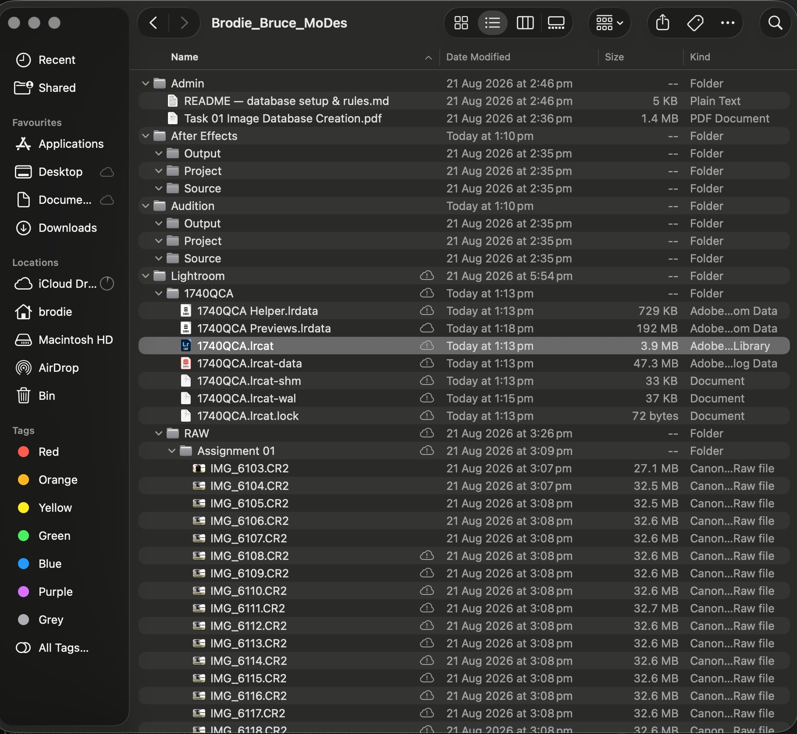
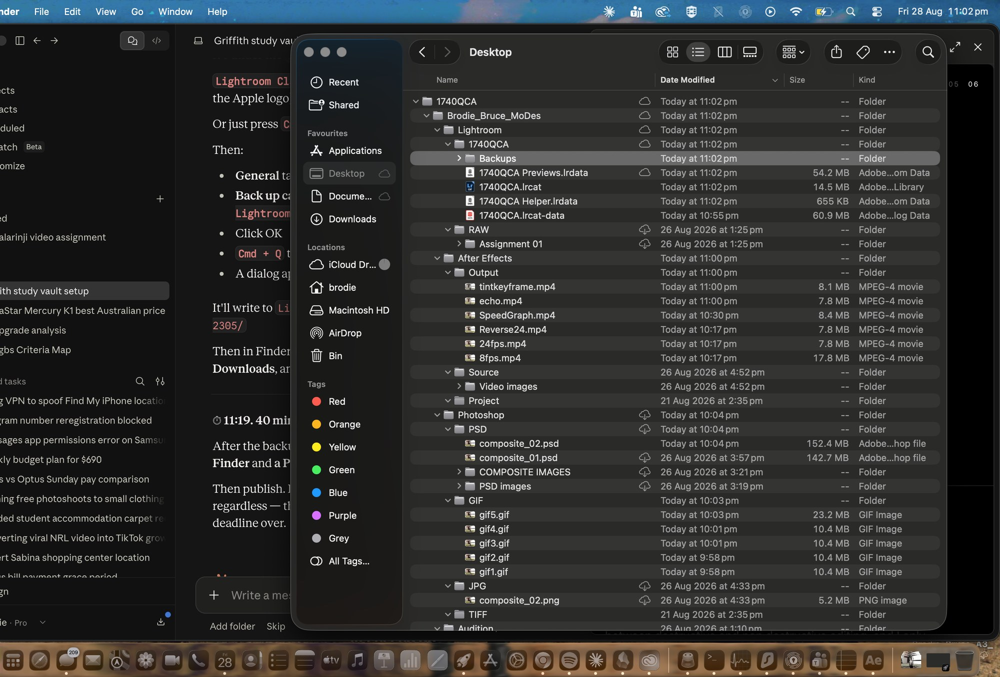
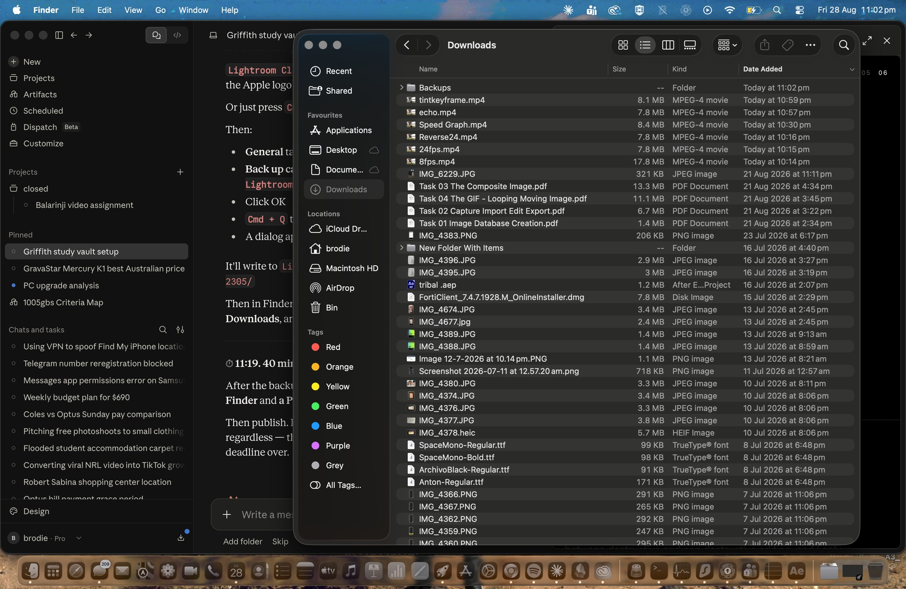

Folder structure

The top level is 1740QCA, then Brodie_Bruce_MoDes, then a folder for each program I use, and each of those has Output, Project and Source sitting inside it. I split it by application rather than by date because project files link to their sources by path, so if a source file moves the project breaks and I have to relink everything. Keeping the sources separated from the outputs means I can clear out exports whenever I want without any risk of killing something a project depends on.
67 × .CR2 · Canon EOS 80D · EF 17–40mm f/4L · 6000 × 4000 · landscape
RAW integrity

The Kind column says Canon Raw file on every one of them, so the camera was set to RAW and not JPEG, and they sit between 27 and 33 MB each because that is what carries the full sensor data. Once these were imported I stopped touching this folder entirely, since Lightroom only stores a path to each file rather than the file itself, which means moving any of them would break every edit I had made against them.
Catalogue

I made it through Create Folder with New Catalog so that Lightroom created the containing folder itself, because doing it manually first would have given me a folder inside a folder with the same name. The catalogue is not one file but a set of them. The .lrcat holds every edit, flag and snapshot, the .lrcat-data at 47 MB holds the mask data, and Previews.lrdata at 192 MB stores the rendered previews so Lightroom does not have to reopen a 33 MB RAW every time I click on something. None of the actual photographs are inside any of it, which is the whole reason the RAW folder can never move.
Backups
My catalogue holds every edit I made across this assignment while the RAW files hold none of them, so losing it would mean losing all of the work without losing a single photograph. That is the reason it gets backed up on its own and to a second location rather than just sitting there.

Set through Catalog Settings to back up when Lightroom next exits, so that it runs automatically on quit rather than depending on me remembering to do it. It writes a dated folder into Lightroom / 1740QCA / Backups, sitting alongside the live catalogue files.

The same folder copied to a second location away from the database. A backup that lives next to the thing it is backing up only protects me against Lightroom corrupting the catalogue, and it does nothing at all if the folder gets deleted or the drive fails, so the second copy has to sit somewhere separate for it to actually count as a backup.
The database at the end

This is the point of setting it up properly at the start. The Lightroom folder holds the catalogue, its backups and the untouched RAW files, After Effects has the six rendered mp4s sitting in Output and the 66 exported JPEGs in Source, and Photoshop has the layered composites in PSD, the five animations in GIF and the flattened export in JPG. Nothing has ended up in the wrong place and nothing needed moving later, which is the only reason none of the project files broke along the way.
Lightroom · After Effects · Photoshop · Premiere Pro · Audition